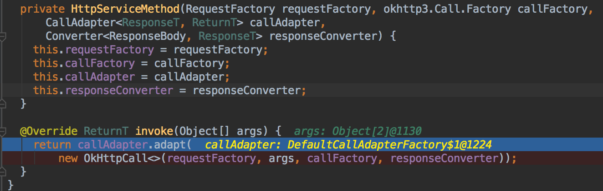

源码分析Retrofit请求流程
Retrofit 是 square 公司的另一款广泛流行的网络请求框架。前面的一篇文章《源码分析OKHttp执行过程》已经对 OkHttp 网络请求框架有一个大概的了解。今天同样地对 Retrofit 的源码进行走读，对其底层的实现逻辑做到心中有数。
0x00 基本用法
Retrofit 的项目地址为：https://github.com/square/retrofit
打开项目目录下的 samples 文件夹，从这里可以浏览 Retrofit 项目的使用范例。在本文中打开SimpleService.java 这个类作为源码走读的入口。这个类很简单，展示了 Retrofit 的基本用法
public final class SimpleService {
//定义接口请求地址
public static final String API_URL = "https://api.github.com";
//定义接口返回数据的实体类
public static class Contributor {
public final String login;
public final int contributions;
public Contributor(String login, int contributions) {
this.login = login;
this.contributions = contributions;
}
}
//定义网络请求接口
public interface GitHub {
//这个是请求github项目代码贡献者列表的接口
//使用@GET注解指定GET请求，并指定接口请求路径，使用大括号{}定义的参数，是形参，retrofit会把方法中的
//@Path 传入到请求路径中
@GET("/repos/{owner}/{repo}/contributors")
Call<List<Contributor>> contributors(
@Path("owner") String owner,
@Path("repo") String repo);
}
public static void main(String... args) throws IOException {
// 创建一个retrofit，并且指定了接口的baseUrl
// 然后设置了一个gson转换器，用于将接口请求下来的json字符串转换为Contributor实体类。
Retrofit retrofit = new Retrofit.Builder()
.baseUrl(API_URL)
.addConverterFactory(GsonConverterFactory.create())
.build();
// 这里是魔法所在，retrofit将程序猿定义的接口变成“实现类”
GitHub github = retrofit.create(GitHub.class);
//通过retrofit这个“实现类”执行contributors方法
Call<List<Contributor>> call = github.contributors("square", "retrofit");
// 执行Call类中的execute方法，这是一个同步方法
// 当然跟okhttp一样，异步方法是enqueue，这个下文会提到
List<Contributor> contributors = call.execute().body();
for (Contributor contributor : contributors) {
System.out.println(contributor.login + " (" + contributor.contributions + ")");
}
}
}
通过上面代码的阅读，知道 retrofit 使用流程
- 定义
API - 构造接口数据实体类
- 构造
retrofit对象，指定baseUrl和数据转换器（即接口数据解析器，如对json、xml、protobuf等数据类型的解析） - 通过
retrofit将程序猿定义的API接口变成”实现类” - 执行“实现类”的方法
- 执行网络请求，获取接口请求数据
这个流程关键点是4、5、6，下文将详细对这几个步骤的源码进行阅读。
在继续下文之前，我们先看看这个SimpleService的执行结果，它打印了retrofit 这个项目的代码贡献者
JakeWharton (928)
swankjesse (240)
pforhan (48)
eburke (36)
dnkoutso (26)
NightlyNexus (26)
edenman (24)
loganj (17)
Noel-96 (16)
rcdickerson (14)
rjrjr (13)
kryali (9)
adriancole (9)
holmes (7)
swanson (7)
JayNewstrom (6)
crazybob (6)
Jawnnypoo (6)
danrice-square (5)
vanniktech (5)
Turbo87 (5)
naturalwarren (5)
guptasourabh04 (4)
artem-zinnatullin (3)
codebutler (3)
icastell (3)
jjNford (3)
f2prateek (3)
PromanSEW (3)
koalahamlet (3)
0x01 构造过程
从上文的源码阅读中，可以看出程序猿只是定义了一个接口，但是现在实现接口的工作是由 retrofit 来实现的
GitHub github = retrofit.create(GitHub.class);
Call<List<Contributor>> call = github.contributors("square", "retrofit");
create
打开 retrofit.create方法
public <T> T create(final Class<T> service) {
//对接口进行校验
Utils.validateServiceInterface(service);
if (validateEagerly) {
eagerlyValidateMethods(service);
}
//通过Proxy创建了一个代理
return (T) Proxy.newProxyInstance(service.getClassLoader(), new Class<?>[] { service },
new InvocationHandler() {
private final Platform platform = Platform.get();
private final Object[] emptyArgs = new Object[0];
@Override public Object invoke(Object proxy, Method method, @Nullable Object[] args)
throws Throwable {
// If the method is a method from Object then defer to normal invocation.
if (method.getDeclaringClass() == Object.class) {
return method.invoke(this, args);
}
//判断是否为默认方法，Java8中接口也可以有默认方法，所以这里有这个判断
if (platform.isDefaultMethod(method)) {
return platform.invokeDefaultMethod(method, service, proxy, args);
}
//关键点
return loadServiceMethod(method).invoke(args != null ? args : emptyArgs);
}
});
}
这个方法很短，关键是通过 Proxy 创建了一个 Github 接口的代理类并返回该代理。
newProxyInstance 方法需要3个参数：ClassLoader、Class<?>数组、InvocationHandler 回调。
这个 InvocationHandler 非常关键，当执行接口 Github 的contributors方法时，会委托给InvocationHandler的invoke 方法来执行。即Github将接口代理给了Proxy来执行了。
InvocationHandler
接着看InvocationHandler 接口的实现。
在 invoke 方法中有三个参数，其中proxy 就是代理对象，而 method 就是程序猿定义的那个网络请求接口，顾名思义 args 就是方法的参数。
此方法最终是调用了
loadServiceMethod(method).invoke(args != null ? args : emptyArgs);
loadServiceMethod
打开 loadServiceMethod方法
ServiceMethod<?> loadServiceMethod(Method method) {
// 判断是否有缓存
ServiceMethod<?> result = serviceMethodCache.get(method);
if (result != null) return result;
//同步处理
synchronized (serviceMethodCache) {
result = serviceMethodCache.get(method);
if (result == null) {
//没有获取到缓存则使用`ServiceMethod`方法来创建
result = ServiceMethod.parseAnnotations(this, method);
//最后缓存起来
serviceMethodCache.put(method, result);
}
}
return result;
}
这个方法就是通过 method 来获取一个 ServiceMethod 对象。
ServiceMethod
打开 ServiceMethod 发现它是一个抽象类，有一个静态方法 parseAnnotations 和一个抽象方法 invoke。
abstract class ServiceMethod<T> {
static <T> ServiceMethod<T> parseAnnotations(Retrofit retrofit, Method method) {
//对注解进行解析
RequestFactory requestFactory = RequestFactory.parseAnnotations(retrofit, method);
//获取方法的返回类型
Type returnType = method.getGenericReturnType();
//对返回类型进行校验
if (Utils.hasUnresolvableType(returnType)) {
throw methodError(method,
"Method return type must not include a type variable or wildcard: %s", returnType);
}
if (returnType == void.class) {
throw methodError(method, "Service methods cannot return void.");
}
//最终使用到HttpServiceMethod类
return HttpServiceMethod.parseAnnotations(retrofit, method, requestFactory);
}
abstract T invoke(Object[] args);
}
parseAnnotations 方法就是对程序猿定义的接口中使用的注解进行解析。
最后是使用了HttpServiceMethod.parseAnnotations方法
HttpServiceMethod
/** Adapts an invocation of an interface method into an HTTP call. */
final class HttpServiceMethod<ResponseT, ReturnT> extends ServiceMethod<ReturnT> {
static <ResponseT, ReturnT> HttpServiceMethod<ResponseT, ReturnT> parseAnnotations(
Retrofit retrofit, Method method, RequestFactory requestFactory) {
CallAdapter<ResponseT, ReturnT> callAdapter = createCallAdapter(retrofit, method);
//...省略部分代码
Converter<ResponseBody, ResponseT> responseConverter =
createResponseConverter(retrofit, method, responseType);
okhttp3.Call.Factory callFactory = retrofit.callFactory;
return new HttpServiceMethod<>(requestFactory, callFactory, callAdapter, responseConverter);
}
//...省略部分代码
@Override ReturnT invoke(Object[] args) {
return callAdapter.adapt(
new OkHttpCall<>(requestFactory, args, callFactory, responseConverter));
}
}
HttpServiceMethod 是 ServiceMethod 的子类。而在parseAnnotations 方法中构造了HttpServiceMethod实例并返回。
因此，loadServiceMethod方法返回的是HttpServiceMehod对象
这样下面代码的执行实际上是执行了 HttpServiceMehod 的 invoke 方法。
loadServiceMethod(method).invoke(args != null ? args : emptyArgs);
再次翻看上文中HttpServiceMethod类
@Override ReturnT invoke(Object[] args) {
return callAdapter.adapt(
new OkHttpCall<>(requestFactory, args, callFactory, responseConverter));
}
invoke 方法里有执行了callAdapter.adapt方法，参数为OkHttpCall，这个类实际上就是对okhttp网络请求的封装，这里也可以看出retrofit内部是使用了okhttp来执行网络请求的
CallAdapter
public interface CallAdapter<R, T> {
//..省略部分代码
T adapt(Call<R> call);
//CallAdapter抽象工厂类
abstract class Factory {
//返回CallAdapter实例
public abstract @Nullable CallAdapter<?, ?> get(Type returnType, Annotation[] annotations,
Retrofit retrofit);
//..省略部分代码
}
}
这是一个接口，内部有一个Factory抽象工厂类，用于获取CallAdapter对象。
CallAdapter 有很多子类，那 callAdapter.adapt 方法执行的是哪个具体类的方法呢？实际上，从调试代码中可以发现是调用DefaultCallFactory中的内部实现类

DefaultCallAapterFactory
final class DefaultCallAdapterFactory extends CallAdapter.Factory {
static final CallAdapter.Factory INSTANCE = new DefaultCallAdapterFactory();
@Override public @Nullable CallAdapter<?, ?> get(
Type returnType, Annotation[] annotations, Retrofit retrofit) {
if (getRawType(returnType) != Call.class) {
return null;
}
final Type responseType = Utils.getCallResponseType(returnType);
//返回一个CallAapter实例
return new CallAdapter<Object, Call<?>>() {
@Override public Type responseType() {
return responseType;
}
@Override public Call<Object> adapt(Call<Object> call) {
//将参数返回，而这个参数就是OKHttpCall的实例
return call;
}
};
}
}
可以发现，在adapt方法中就是将参数call返回。
所以下面代码返回的是OkHttpCall对象。
loadServiceMethod(method).invoke(args != null ? args : emptyArgs);
综上
//创建了Github接口的代理类
GitHub github = retrofit.create(GitHub.class);
//执行接口的方法，其实就是调用了代理类的方法，并最终返回了一个OKhttpCall对象
//而这个对象就是对Okhttp的封装
Call<List<Contributor>> call = github.contributors("square", "retrofit");
0x02 执行结果
上文中获取到OKhttpCall对象，它只是把接口请求过程进行了封装，并没有真正的获取到接口数据。要获取到接口数据还需要调用OkHttpCall.execute方法
List<Contributor> contributors = call.execute().body();
Call.execute 或 Call.enqueue
这里的请求过程与前文中《源码分析OKHttp执行过程》介绍的是类似的。接一下
打开OkHttpCall.execute方法
@Override public Response<T> execute() throws IOException {
okhttp3.Call call;
synchronized (this) {
if (executed) throw new IllegalStateException("Already executed.");
executed = true;
if (creationFailure != null) {
if (creationFailure instanceof IOException) {
throw (IOException) creationFailure;
} else if (creationFailure instanceof RuntimeException) {
throw (RuntimeException) creationFailure;
} else {
throw (Error) creationFailure;
}
}
call = rawCall;
if (call == null) {
try {
call = rawCall = createRawCall();
} catch (IOException | RuntimeException | Error e) {
throwIfFatal(e); // Do not assign a fatal error to creationFailure.
creationFailure = e;
throw e;
}
}
}
if (canceled) {
call.cancel();
}
return parseResponse(call.execute());
}
这里的执行逻辑也很简单
- 使用
synchronized进行同步操作 - 进行异常处理
- 调用
createRawCall创建okhttp3.Call对象 - 执行
okhttp的Call.execute方法，并解析response后返回请求结果
同样地，异步请求操作也是类似的
打开OkHttpCall.enqueue方法
@Override public void enqueue(final Callback<T> callback) {
checkNotNull(callback, "callback == null");
okhttp3.Call call;
Throwable failure;
synchronized (this) {
if (executed) throw new IllegalStateException("Already executed.");
executed = true;
call = rawCall;
failure = creationFailure;
if (call == null && failure == null) {
try {
//创建okhttp网络请求
call = rawCall = createRawCall();
} catch (Throwable t) {
throwIfFatal(t);
failure = creationFailure = t;
}
}
}
if (failure != null) {
callback.onFailure(this, failure);
return;
}
if (canceled) {
call.cancel();
}
//最终是执行了OkHttp中的call.enqueue方法
//并回调相应的接口
call.enqueue(new okhttp3.Callback() {
@Override public void onResponse(okhttp3.Call call, okhttp3.Response rawResponse) {
Response<T> response;
try {
response = parseResponse(rawResponse);
} catch (Throwable e) {
throwIfFatal(e);
callFailure(e);
return;
}
try {
callback.onResponse(OkHttpCall.this, response);
} catch (Throwable t) {
t.printStackTrace();
}
}
@Override public void onFailure(okhttp3.Call call, IOException e) {
callFailure(e);
}
private void callFailure(Throwable e) {
try {
callback.onFailure(OkHttpCall.this, e);
} catch (Throwable t) {
t.printStackTrace();
}
}
});
}
这个方法其实最终都是执行了okhttp的相应方法。
0x03 总结
Retrofit 其实一种更加高级的网络应用框架，通过代理模式简化了接口的定义，无需提供接口的具体实现就可以完成网络接口请求的执行。它的底层实际上是封装了 okhttp 的执行过程，也把对网络的操作进行了封装，而对于程序猿来说只需要关注业务逻辑，对网络请求的具体实现不必关心。
例如在本文开头的实例中我们只需要定义接口，定义实体类，其他工作都交给了 Retrofit ，接下来就是Magic。